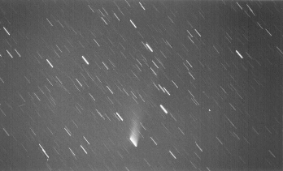
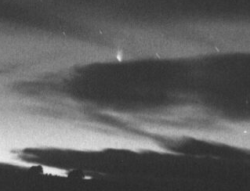

Comet Hyakutake (1996B2)
Two images from May 1996
These images were scanned using a Logitech PageScan Colour scanner at 200
DPI, from Kodak Tri-X pan 400 (push processed to 800) black-and-white prints.
Simple image processing was then carried out (JPEG to GIF conversion, cropping, brightness adjustment) using PageScan Image Editor v1.2, Graphic Workshop
v1.1n, and WinGIF v1.4.
The photos were taken from a tripod-mounted Pentax K1000 camera - hence
the obvious trailing - by David Benn from a private property 20 minutes
south-east of Launceston.
Distances below are given in Astronomical Units, where 1 AU = 149,597,870 km.

2 minute exposure, from 05:46:30 am to 05:48:30 am on 24/5/96 (135mm at f/2.8)
Distance from Earth: 1.16 AU; Distance from Sun: 0.71 AU
Hyakutake peeking through the clouds...

1 minute exposure, from 05:30 am to 05:31 am on 15/5/96 (50mm at f/3.5)
Distance from Earth: 1.21 AU; Distance from Sun: 0.49 AU
Also see the Comet Hyakutake Home Page and the AST home page for more pictures and links.